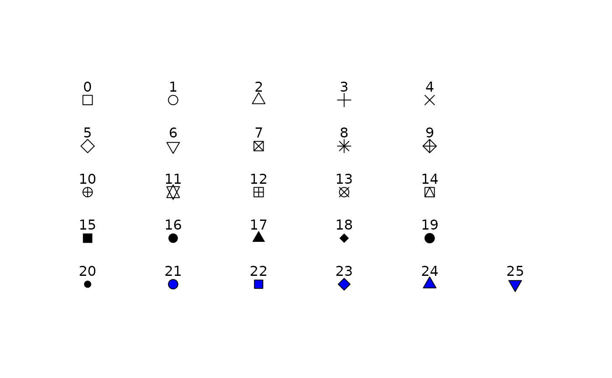

Selects shapes from the base R shape palette and outputs as a vector
gl.select.shapes.RdThis script draws upon the standard R shape palette to extract a vector of shapes for plotting, where the script that follows has a shape parameter expecting a vector of shapes.
Arguments
- x
Optionally, provide a gl object from which to determine the number of populations [default NULL].
- select
Select the shapes to retain in the output vector [default NULL, all shapes shown and returned].
- verbose
Verbosity: 0, silent or fatal errors; 1, begin and end; 2, progress log; 3, progress and results summary; 5, full report [default 2 or as specified using gl.set.verbosity].
Details
By default the shape palette will be displayed in full in the graphics window from which shapes can be selected in a subsequent run, and the vector of shapes returned for later use.
The select parameter can be used to select shapes from the specified 26 shapes available (0-25). For example, select=c(1,1,3) will select shape 1, 1 again and 3 to retain in the final vector. This can be useful for fine-tuning shape selection, and matching colors and shapes.
See also
Other Exploration/visualisation functions:
gl.pcoa.plot(),
gl.select.colors(),
gl.smearplot()
Author
Custodian: Arthur Georges -- Post to https://groups.google.com/d/forum/dartr
Examples
# SET UP DATASET
gl <- testset.gl
levels(pop(gl))<-c(rep('Coast',5),rep('Cooper',3),rep('Coast',5),
rep('MDB',8),rep('Coast',7),'Em.subglobosa','Em.victoriae')
# EXAMPLES
shapes <- gl.select.shapes() # Select and display available shapes
#> Starting gl.select.shapes
#> Warning: Requires shapes not specified, displaying and returning all available 26 shapes
#>

#> Displaying and returning shapes 0, 1, 2, 3, 4, 5, 6, 7, 8, 9, 10, 11, 12, 13, 14, 15, 16, 17, 18, 19, 20, 21, 22, 23, 24, 25
#> Completed: gl.select.shapes
#>
# Select and display a restricted set of shapes
shapes <- gl.select.shapes(select=c(1,1,1,5,8))
#> Starting gl.select.shapes
#>
#> Displaying and returning shapes 1, 1, 1, 5, 8
#> Completed: gl.select.shapes
#>
# Select set of shapes and check with no. of pops.
shapes <- gl.select.shapes(x=gl,select=c(1,1,1,5,8))
#> Starting gl.select.shapes
#> Processing genlight object with SNP data
#> Specified shapes 5 must agree in number with the number of populations 5 in the gl object
#> Setting the number of shapes to number of populations
#>
#> Displaying and returning shapes 1, 1, 1, 5, 8
#> Completed: gl.select.shapes
#>